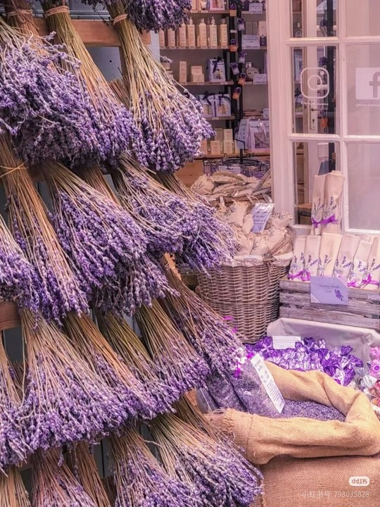
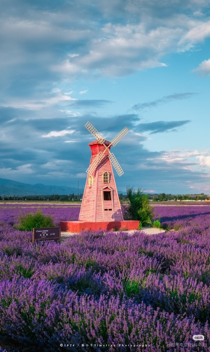

关于薰衣草
薰衣草（拉丁学名：Lavandula angustifolia Mill.）是唇形科薰衣草属植物，原产于地中海沿岸、欧洲各地及大洋洲列岛，后被广泛栽种于英国及南斯拉夫，中国主要分布在新疆伊犁河谷地区。
薰衣草是兼具观赏与实用价值的植物，其花穗呈紫色，全株带有独特的清香，不仅是打造浪漫花海的核心花卉，还可提取精油、制作香料、入药等，有“香草之后”的美誉。
新疆伊犁是中国最大的薰衣草种植基地，种植面积占全国的95%以上，每年6-7月，伊犁的薰衣草田成片绽放，紫色花海延绵数十公里，成为新疆极具代表性的自然景观。

伊犁薰衣草基地
伊犁霍城县是薰衣草的核心种植区，解忧公主薰衣草园、65团薰衣草田是最热门的观赏地，每年花期吸引大量游客前来打卡。

薰衣草实用价值
薰衣草精油有舒缓情绪、助眠、抗菌的作用，伊犁当地的薰衣草制品（精油、香包、香皂）是热门伴手礼。

浪漫花期
薰衣草主要花期为每年6-7月（第一茬），部分基地8-9月会开第二茬，清晨或傍晚是拍摄花海的最佳时段。
薰衣草观赏指南
最佳时间
6月中旬-7月上旬（盛花期）
最佳地点
霍城解忧公主薰衣草园、65团、芦草沟镇
穿搭建议
浅色系/白色服装，与紫色花海更搭
注意事项
做好防晒，勿随意踩踏花田